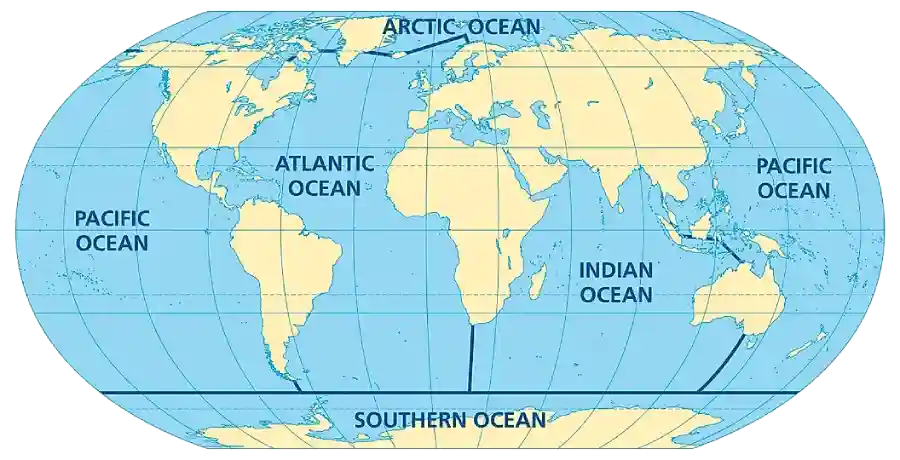

Höf jarðar
Atlantashaf, Indlandshaf og Kyrrahaf teygja sig til norðurs frá Suðurhafi og greina að helstu meginlönd jarðar.

Mynd: Heimskort sem sýnir höfin fimm.
Almennt er álitið að úthöf jarðar séu fimm en Suðurhaf hlaut þó ekki opinbera viðurkenningu fyrr en árið 2000. Hvað er átt við með að höfin séu sjö?
Á norðurskautssvæði jarðar er fimmta og smæsta úthafið, Norður-Íshaf. Með jöðrum þessara úthafa eru smærri svæði sem nefnast strandhöf, innhöf og flóar. Mörk sumra þessara hafa, eins og Þanghafsins, eru illa skilgreind, en önnur höf, eins og Miðjarðarhaf og Karíbahaf, eru næstum algerlega afmörkuð af löndum eða eyjabogum.
Íslandshaf, Grænlandshaf og Noregshaf eru höf sem umkringja Ísland og eru þau öll hluti af næststærsta útafi jarðar: Atlantshafi.
Eiginleikar
Í höfunum eru 1,35 milljarðar tonna af sjó. Þetta gríðarlega vatnsmagn er ekki einsleitt því ýmsir eiginleikar þess eru breytilegir í bæði lóðrétta og lárétta stefnu. Höfin eru lagskipt og hvert lag hefur sína sérstöku einkenni.
Eiginleikarnir flokkast niður í eftirfarandi fjögur atriði:
Birta
Geislar sólar ná ekki langt í gegnum sjóvatn. Hins vegar komast mismunandi litir eða bylgjulengdir ljóss mislangt niður. Sjórinn gleypir löngu bylgjunnar sérstaklega vel en hlutfall hinna mjög stuttu bylgjulengda sólarljósi er lágt. Þar af leiðandi nær aðeins lítið ljós á bláa sviðinu niður fyrir 45 m.
Kafarar sem fara niður á 45m dýpi sjá allt í blágráum lit.
Selta
Selta sjóvatns er að meðaltali um 35g af salti í hverjum lítra af vatni. Seltan er breytileg og er mest í efsta lagi hlýrra hafa vegna uppgufunar vatns frá yfirborðinu, en minnst á heimskautasvæðum við ósa stórfljóta þar sem innsteymi ferskvatns er mikið. Saltið í sjónum er upphaflega komið úr steindum í bergi sem leyst hefur upp og efnin skolast með ám til sjávar.
Þrýstingur
Haffræðingar nota eininguna bar til að mæla þrýsting. Eitt bar jafngildir 100.000 newtonum á fermeter. Við sjávarborð er þrýstingur á alla hluti um eitt bar að meðaltali. Í vatni vex þrýstingur almennt með dýpi um eitt bar á hverja 10m. Þetta þýðir að á 4 km dýpi er þrýstingurinn meira en 400 faldur yfirborðsþrýstingur. Þessi gríðalegi þrýstingur veldur því að rannsóknir á hafdjúpunum eru takmarkaðar.
Hiti
Hiti yfirborðs sjávar er talsvert breytilegur frá einum stað til annars en hitinn er aftur á móti lítið breytiilegur þegar niður í djúpin er komið. Nálægt miðbaug verma sterkir geislar sólarinnar efstu lög sjávar þannig að breitt belti myndast þar sem sjávarhiti er yfir 25 gráður C. Undir yfirborðinu nálgast hitinn smám saman meðalhita djúphafsins: 2 gráður C.
.webp)
.webp)
.webp)
.webp)
.webp)
.webp)
.webp)
.webp)
.webp)
.webp)
.webp)